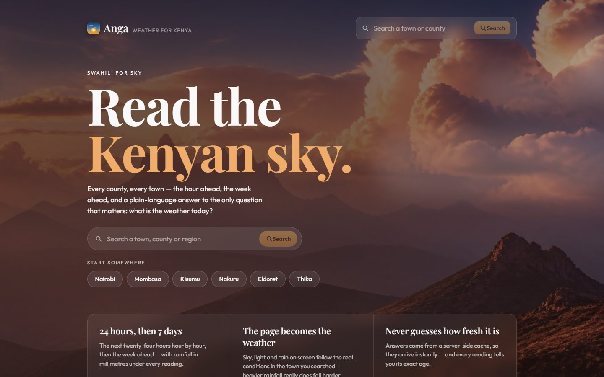

full-stack · case study
Anga — Weather for Kenya
A weather dashboard engineered to survive a 1,000-requests-per-month upstream quota: Redis caching, request coalescing (30 concurrent requests → 1 upstream call, verified live), a circuit breaker and honest freshness labels. 222 automated tests.
- Django
- Redis
- PostgreSQL
- React